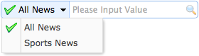

SearchBox
Extend from $.fn.textbox.defaults. Override defaults with $.fn.searchbox.defaults.
The searchbox prompt the user to enter search value. It can combine a menu that allows the user to select different searching category. The searching action will be executed when the user press ENTER key or click the search button on the right of component.
Dependencies
- textbox
- menubutton
Usage Example
Create SearchBox
1. Create from markup. Add 'easyui-searchbox' class to <input/> markup.
2. Create programatically.
Properties
| Name | Type | Description | Default |
|---|---|---|---|
| width | number | The width of the component. | auto |
| height | number | The height of the component. Available since version 1.3.2. | 22 |
| prompt | string | The prompt message to be displayed in input box. | '' |
| value | string | The inputed value. | '' |
| menu | selector |
The search type menu. Each menu item can has below attribute: name: the search type name. selected: current selected search type name. The example below shows how to define a selected searching type name. <input class="easyui-searchbox" style="width:300px" data-options="menu:'#mm'" /> <div id="mm" style="width:150px"> <div data-options="name:'item1'">Search Item1</div> <div data-options="name:'item2',selected:true">Search Item2</div> <div data-options="name:'item3'">Search Item3</div> </div> |
null |
| searcher | function(value,name) | The searcher function that will be called when user presses the searching button or press ENTER key. | null |
| disabled | boolean | Defines if to disable the searchbox. Available since version 1.3.6. | false |
Methods
| Name | Parameter | Description |
|---|---|---|
| options | none | Return the options object. |
| menu | none |
Return the search type menu object.
The example below shows how to change the menu item icon.
var m = $('#ss').searchbox('menu'); // get the menu object
var item = m.menu('findItem', 'Sports News'); // find the menu item
// change the menu item icon
m.menu('setIcon', {
target: item.target,
iconCls: 'icon-save'
});
// select the searching type name
$('#ss').searchbox('selectName', 'sports');
|
| textbox | none | Return the text box object. |
| getValue | none | Return the current searching value. |
| setValue | value | Set a new searching value. |
| getName | none | Return the current searching type name. |
| selectName | name |
Select the current searching type name.
Code example:
$('#ss').searchbox('selectName', 'sports');
|
| destroy | none | Destroy this component. |
| resize | width | Reset the component width. |
| disable | none | Disable the searchbox. Available since version 1.3.6. |
| enable | none | Enable the searchbox. Available since version 1.3.6. |
| clear | none | Clear the searching value. Available since version 1.3.6. |
| reset | none | Reset the searching value. Available since version 1.3.6. |